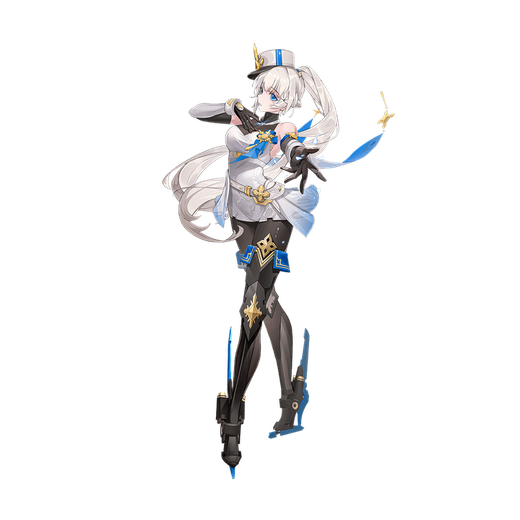

基本データ
- コスト
- 2.5
- 体力
- 未入力
- 赤ロック
- 31
- 動画
- 登録動画

Move Table
| 射撃 | 名称 | 弾数 | 威力 | 備考 |
|---|---|---|---|---|
| メイン射撃 | パ・グラシアル | 6 | 210~441 | 最大4連射 |
| Nサブ射撃 | ポワント・ド・グラス | 1(3凸時2) | 180~383 | 1ボタン2連射 接地判定 |
| 横サブ射撃 | ヴァン・ド・ネージュ | 1 | 69～377 | ９本の氷弾の同時射撃 |
| 各射撃横メイン射派生 | ロン・ド・ジャンプ | 2(2凸時3) | 192 | 横移動しながら射撃 |
| 各射撃後メイン射派生 | サリュ・フィナル | 174 | - | 3way射撃 |
| サブ格闘 | キャップ・ブランシュ | 100 | - | 着脱可能な射撃バリア |
| 格闘 | 名称 | 入力 | 弾数 | 威力 | 備考 |
|---|---|---|---|---|---|
| 通常格闘 | ダンス·ド·ロセス | NNN | - | - | 606 サブ射派生 |
| パ・ド・トロワ | - | N→サブ射 | |||
| NN→サブ射 | - | - | 654 | 697～739 サブ格派生 | |
| ワルツ | - | N→サブ格 | |||
| NN→サブ格 | - | - | 728 | 759～783 | |
| 横格闘 | ダンス·ド·ロセス | 横N | - | - | 499 サブ射派生 |
| パ・ド・トロワ | - | 横→サブ射 | |||
| 横N→サブ射 | - | - | 645 | 656～695 サブ格派生 | |
| ワルツ | - | 横→サブ格 | |||
| 横N→サブ格 | - | - | 717 | 727～754 | |
| 前格闘 | ダンス·ド·ロセス | 前 | - | 578 | ダウン拾い対応 |
| 後格闘 | ダンス·ド·ロセス | 後 | - | - | 449 |
| 後サブ格闘 | シュート・ド・シーニュ | 後サブ格 | 2 | 225(491) | 弾数性ピョン格闘。4凸で威力アップ |
| バーストアタック | 名称 | - | 威力 | ||
| F/B/SMDC | - | 備考 | |||
| バーストアタック | ファン・デュ・シーニュ | - | 1047/956/869 | ダメージ推移が独特な乱舞格闘 |